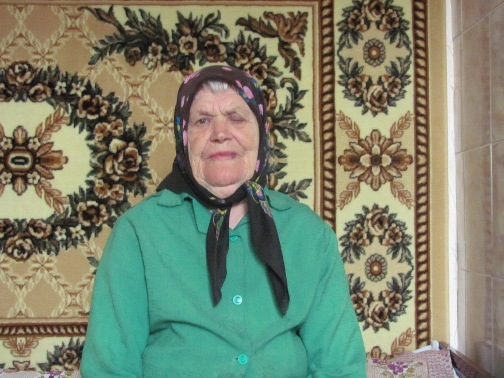

Кошель (Флорьянович) Елена Михайловна
🏡 1. Семья и довоенное детство
Отец, Флорьянович Михаил Иосифович, работал в местном самоуправлении; мать — Елизавета Юстиновна. В большой семье воспитывалось девятеро детей: Надежда, Наталья, Валентина, Александр, Иосиф, Николай, Елена, Степан, Свирид.
⚡ 2. Начало войны и оккупация родного края
До войны жили дружно, с восьми лет девочки пряли и ткали лен. Летом 1941 г. деревню оккупировали захватчики.
⛓️ 3. Облава, арест и отправка в эшелонах
В 1943 г. каратели забрали из дома сразу троих: Валентину, Елену и Николая. Николая отпустили в деревне, а сестер через лагерь в Столине и открытый эшелон без удобств доставили в Магдебург, затем в Штендель. Крупный помещик Реклем отобрал четырех девушек («vier Mädchen») из одной деревни Семигостичи и увез на телеге в село Унглинген.
🌾 4. Рабский труд, испытания и лагеря Германии
Трудились на сельхозработах с 6:30 утра до 19:00 вечера без выходных, кроме воскресенья. Паек — булка хлеба и маргарин на неделю. В поле девушки тайком прятали овощи и отмечали тайники палочками, чтобы голодающие советские военнопленные с аэродрома могли забрать еду ночью под угрозой виселицы.
🕊️ 5. Освобождение союзными и советскими войсками
В 1945 г. пережили налеты союзной авиации в бомбоубежищах. Освобождены американскими войсками, переправлены через Эльбу в советскую зону и эшелоном вернулись домой.
🌱 6. Возвращение на пепелище и мирный труд
Вернулась в родительский дом. В Семигостичах встретила мужа — тоже вернувшегося из неволи остарбайтера. Всю жизнь добросовестно трудилась в колхозе доглядчицей свиней и телят. Воспитали троих детей (Валентина — медсестра, Мария — воспитатель, Владимир — строитель).
📷 Фотографии и архивные документы (1)
Фото 14. Кошель Елена Михайловна, 05.05.2013 год